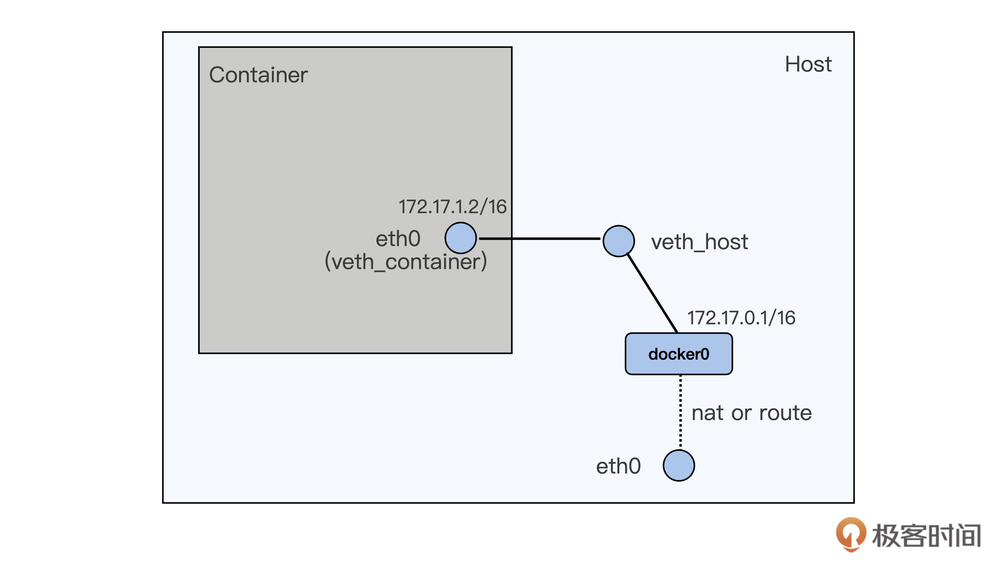

- 00 开篇词 一个态度两个步骤，成为容器实战高手.md.html
- 01 认识容器：容器的基本操作和实现原理.md.html
- 02 理解进程（1）：为什么我在容器中不能kill 1号进程？.md.html
- 03 理解进程（2）：为什么我的容器里有这么多僵尸进程？.md.html
- 04 理解进程（3）：为什么我在容器中的进程被强制杀死了？.md.html
- 05 容器CPU（1）：怎么限制容器的CPU使用？.md.html
- 06 容器CPU（2）：如何正确地拿到容器CPU的开销？.md.html
- 07 Load Average：加了CPU Cgroup限制，为什么我的容器还是很慢？.md.html
- 08 容器内存：我的容器为什么被杀了？.md.html
- 09 Page Cache：为什么我的容器内存使用量总是在临界点.md.html
- 10 Swap：容器可以使用Swap空间吗？.md.html
- 11 容器文件系统：我在容器中读写文件怎么变慢了？.md.html
- 12 容器文件Quota：容器为什么把宿主机的磁盘写满了？.md.html
- 13 容器磁盘限速：我的容器里磁盘读写为什么不稳定_.md.html
- 14 容器中的内存与IO：容器写文件的延时为什么波动很大？.md.html
- 15 容器网络：我修改了_proc_sys_net下的参数，为什么在容器中不起效？.md.html
- 16 容器网络配置（1）：容器网络不通了要怎么调试.md.html
- 17 容器网络配置（2）：容器网络延时要比宿主机上的高吗.md.html
- 18 容器网络配置（3）：容器中的网络乱序包怎么这么高？.md.html
- 19 容器安全（1）：我的容器真的需要privileged权限吗.md.html
- 20 容器安全（2）：在容器中，我不以root用户来运行程序可以吗？.md.html
- 加餐01 案例分析：怎么解决海量IPVS规则带来的网络延时抖动问题？.md.html
- 加餐02 理解perf：怎么用perf聚焦热点函数？.md.html
- 加餐03 理解ftrace（1）：怎么应用ftrace查看长延时内核函数？.md.html
- 加餐04 理解ftrace（2）：怎么理解ftrace背后的技术tracepoint和kprobe？.md.html
- 加餐05 eBPF：怎么更加深入地查看内核中的函数？.md.html
- 加餐06 BCC：入门eBPF的前端工具.md.html
- 结束语 跳出舒适区，突破思考的惰性.md.html
- 捐赠
17 容器网络配置（2）：容器网络延时要比宿主机上的高吗
你好，我是程远。
在上一讲里，我们学习了在容器中的网络接口配置，重点讲解的是veth的接口配置方式，这也是绝大部分容器用的缺省的网络配置方式。
不过呢，从veth的这种网络接口配置上看，一个数据包要从容器里发送到宿主机外，需要先从容器里的eth0 (veth_container) 把包发送到宿主机上veth_host，然后再在宿主机上通过nat或者路由的方式，经过宿主机上的eth0向外发送。

这种容器向外发送数据包的路径，相比宿主机上直接向外发送数据包的路径，很明显要多了一次接口层的发送和接收。尽管veth是虚拟网络接口，在软件上还是会增加一些开销。
如果我们的应用程序对网络性能有很高的要求，特别是之前运行在物理机器上，现在迁移到容器上的，如果网络配置采用veth方式，就会出现网络延时增加的现象。
那今天我们就来聊一聊，容器网络接口对于容器中应用程序网络延时有怎样的影响，还有这个问题应该怎么解决。
问题重现
对于这种veth接口配置导致网络延时增加的现象，我们可以通过运行netperf（Netperf是一个衡量网络性能的工具，它可以提供单向吞吐量和端到端延迟的测试）来模拟一下。
这里我们需要两台虚拟机或者物理机，这两台机器需要同处于一个二层的网络中。
具体的配置示意图如下：

首先，我们需要在第一台机器上启动一个veth接口的容器，容器的启动和宿主机上的配置你可以参考一下这里的脚本。在第二台机器上，我们只要启动一个netserver就可以了。
然后呢，我们分别在容器里和宿主机上运行与netserver交互的netperf，再比较一下它们延时的差异。
我们可以运行netperf的TCP_RR测试用例，TCP_RR是netperf里专门用来测试网络延时的，缺省每次运行10秒钟。运行以后，我们还要计算平均每秒钟TCP request/response的次数，这个次数越高，就说明延时越小。
接下来，我们先在第一台机器的宿主机上直接运行netperf的TCP_RR测试用例3轮，得到的值分别是2504.92，2410.14和2422.81，计算一下可以得到三轮Transactions平均值是2446/s。
# ./netperf -H 192.168.0.194 -t TCP_RR
MIGRATED TCP REQUEST/RESPONSE TEST from 0.0.0.0 (0.0.0.0) port 0 AF_INET to 192.168.0.194 () port 0 AF_INET : first burst 0
Local /Remote
Socket Size Request Resp. Elapsed Trans.
Send Recv Size Size Time Rate
bytes Bytes bytes bytes secs. per sec
16384 131072 1 1 10.00 2504.92
16384 131072
# ./netperf -H 192.168.0.194 -t TCP_RR
MIGRATED TCP REQUEST/RESPONSE TEST from 0.0.0.0 (0.0.0.0) port 0 AF_INET to 192.168.0.194 () port 0 AF_INET : first burst 0
Local /Remote
Socket Size Request Resp. Elapsed Trans.
Send Recv Size Size Time Rate
bytes Bytes bytes bytes secs. per sec
16384 131072 1 1 10.00 2410.14
16384 131072
# ./netperf -H 192.168.0.194 -t TCP_RR
MIGRATED TCP REQUEST/RESPONSE TEST from 0.0.0.0 (0.0.0.0) port 0 AF_INET to 192.168.0.194 () port 0 AF_INET : first burst 0
Local /Remote
Socket Size Request Resp. Elapsed Trans.
Send Recv Size Size Time Rate
bytes Bytes bytes bytes secs. per sec
16384 131072 1 1 10.00 2422.81
16384 131072
同样，我们再在容器中运行一下netperf的TCP_RR，也一样运行三轮，计算一下这三次的平均值，得到的值是2141。
那么我们拿这次容器环境中的平均值和宿主机上得到的值2446做比较，会发现Transactions下降了大概12.5%，也就是网络的延时超过了10%。
[root@4150e2a842b5 /]# ./netperf -H 192.168.0.194 -t TCP_RR
MIGRATED TCP REQUEST/RESPONSE TEST from 0.0.0.0 (0.0.0.0) port 0 AF_INET to 192.168.0.194 () port 0 AF_INET : first burst 0
Local /Remote
Socket Size Request Resp. Elapsed Trans.
Send Recv Size Size Time Rate
bytes Bytes bytes bytes secs. per sec
16384 131072 1 1 10.00 2104.68
16384 131072
[root@4150e2a842b5 /]# ./netperf -H 192.168.0.194 -t TCP_RR
MIGRATED TCP REQUEST/RESPONSE TEST from 0.0.0.0 (0.0.0.0) port 0 AF_INET to 192.168.0.194 () port 0 AF_INET : first burst 0
Local /Remote
Socket Size Request Resp. Elapsed Trans.
Send Recv Size Size Time Rate
bytes Bytes bytes bytes secs. per sec
16384 131072 1 1 10.00 2146.34
16384 131072
[root@4150e2a842b5 /]# ./netperf -H 192.168.0.194 -t TCP_RR
MIGRATED TCP REQUEST/RESPONSE TEST from 0.0.0.0 (0.0.0.0) port 0 AF_INET to 192.168.0.194 () port 0 AF_INET : first burst 0
Local /Remote
Socket Size Request Resp. Elapsed Trans.
Send Recv Size Size Time Rate
bytes Bytes bytes bytes secs. per sec
16384 131072 1 1 10.00 2173.79
16384 131072
分析问题
刚才我们已经得到了测试的数值，我们发现veth方式的确带来了很高的网络延时。那现在我们先来分析一下，为什么veth会带来这么大的网络延时，然后再看看有什么方法可以降低容器里的网络延时。
我们先回顾一下容器里veth接口的配置，还是拿我们上一讲里容器veth的图作为例子。

上一讲中我提到过，veth的虚拟网络接口一般都是成对出现，就像上面图里的veth_container和veth_host一样。
在每次网络传输的过程中，数据包都需要通过veth_container这个接口向外发送，而且必须保证veth_host先接收到这个数据包。
虽然veth是一个虚拟的网络接口，但是在接收数据包的操作上，这个虚拟接口和真实的网路接口并没有太大的区别。这里除了没有硬件中断的处理，其他操作都差不多，特别是软中断（softirq）的处理部分其实就和真实的网络接口是一样的。
我们可以通过阅读Linux内核里的veth的驱动代码（drivers/net/veth.c）确认一下。
veth发送数据的函数是veth_xmit()，它里面的主要操作就是找到veth peer设备，然后触发peer设备去接收数据包。
比如veth_container这个接口调用了veth_xmit()来发送数据包，最后就是触发了它的peer设备veth_host去调用netif_rx()来接收数据包。主要的代码我列在下面了：
static netdev_tx_t veth_xmit(struct sk_buff *skb, struct net_device *dev)
{
…
/* 拿到veth peer设备的net_device */
rcv = rcu_dereference(priv->peer);
…
/* 将数据送到veth peer设备 */
if (likely(veth_forward_skb(rcv, skb, rq, rcv_xdp) == NET_RX_SUCCESS)) {
…
}
static int veth_forward_skb(struct net_device *dev, struct sk_buff *skb,
struct veth_rq *rq, bool xdp)
{
/* 这里最后调用了 netif_rx() */
return __dev_forward_skb(dev, skb) ?: xdp ?
veth_xdp_rx(rq, skb) :
netif_rx(skb);
}
而netif_rx()是一个网络设备驱动里面标准的接收数据包的函数，netif_rx()里面会为这个数据包raise一个softirq。
__raise_softirq_irqoff(NET_RX_SOFTIRQ);
其实softirq这个概念，我们之前在[CPU的模块]中也提到过。在处理网络数据的时候，一些运行时间较长而且不能在硬中断中处理的工作，就会通过softirq来处理。
一般在硬件中断处理结束之后，网络softirq的函数才会再去执行没有完成的包的处理工作。即使这里softirq的执行速度很快，还是会带来额外的开销。
所以，根据veth这个虚拟网络设备的实现方式，我们可以看到它必然会带来额外的开销，这样就会增加数据包的网络延时。
解决问题
那么我们有什么方法可以减少容器的网络延时呢？你可能会想到，我们可不可以不使用veth这个方式配置网络接口，而是换成别的方式呢？
的确是这样，其实除了veth之外，容器还可以选择其他的网络配置方式。在Docker的文档中提到了macvlan的配置方式，和macvlan很类似的方式还有ipvlan。
那我们先来简单看一下macvlan和ipvlan的异同点。
我们先来看这两个方式的相同之处，无论是macvlan还是ipvlan，它们都是在一个物理的网络接口上再配置几个虚拟的网络接口。在这些虚拟的网络接口上，都可以配置独立的IP，并且这些IP可以属于不同的Namespace。
然后我再说说它们的不同点。对于macvlan，每个虚拟网络接口都有自己独立的mac地址；而ipvlan的虚拟网络接口是和物理网络接口共享同一个mac地址。而且它们都有自己的L2/L3的配置方式，不过我们主要是拿macvlan/ipvlan来和veth做比较，这里可以先忽略macvlan/ipvlan这些详细的特性。
我们就以ipvlan为例，运行下面的这个脚本，为容器手动配置上ipvlan的网络接口。
docker run --init --name lat-test-1 --network none -d registry/latency-test:v1 sleep 36000
pid1=$(docker inspect lat-test-1 | grep -i Pid | head -n 1 | awk '{print $2}' | awk -F "," '{print $1}')
echo $pid1
ln -s /proc/$pid1/ns/net /var/run/netns/$pid1
ip link add link eth0 ipvt1 type ipvlan mode l2
ip link set dev ipvt1 netns $pid1
ip netns exec $pid1 ip link set ipvt1 name eth0
ip netns exec $pid1 ip addr add 172.17.3.2/16 dev eth0
ip netns exec $pid1 ip link set eth0 up
在这个脚本里，我们先启动一个容器，这里我们用”—network none”的方式来启动，也就是在容器中没有配置任何的网络接口。
接着我们在宿主机eth0的接口上增加一个ipvlan虚拟网络接口ipvt1，再把它加入到容器的Network Namespace里面，重命名为容器内的eth0，并且配置上IP。这样我们就配置好了第一个用ipvlan网络接口的容器。
我们可以用同样的方式配置第二个容器，这样两个容器可以相互ping一下IP，看看网络是否配置成功了。脚本你可以在这里得到。
两个容器配置好之后，就像下面图中描述的一样了。从这张图里，你很容易就能看出macvlan/ipvlan与veth网络配置有什么不一样。容器的虚拟网络接口，直接连接在了宿主机的物理网络接口上了，形成了一个网络二层的连接。

如果从容器里向宿主机外发送数据，看上去通过的接口要比veth少了，那么实际情况是不是这样呢？我们先来看一下ipvlan接口发送数据的代码。
从下面的ipvlan接口的发送代码中，我们可以看到，如果是往宿主机外发送数据，发送函数会直接找到ipvlan虚拟接口对应的物理网络接口。
比如在我们的例子中，这个物理接口就是宿主机上的eth0，然后直接调用dev_queue_xmit()，通过物理接口把数据直接发送出去。
static int ipvlan_xmit_mode_l2(struct sk_buff *skb, struct net_device *dev)
{
…
if (!ipvlan_is_vepa(ipvlan->port) &&
ether_addr_equal(eth->h_dest, eth->h_source)) {
…
} else if (is_multicast_ether_addr(eth->h_dest)) {
…
}
/*
* 对于普通的对外发送数据，上面的if 和 else if中的条件都不成立，
* 所以会执行到这一步，拿到ipvlan对应的物理网路接口设备，
* 然后直接从这个设备发送数据。
*/
skb->dev = ipvlan->phy_dev;
return dev_queue_xmit(skb);
}
和veth接口相比，我们用ipvlan发送对外数据就要简单得多，因为这种方式没有内部额外的softirq处理开销。
现在我们还可以看一下，在实际生产环境中，一个应用程序跑在使用veth接口的容器中，跟这个应用程序跑在使用ipvlan接口的容器中，两者的网络延时差异是怎样的。
下面这张图是网络延时的监控图，图里蓝色的线表示程序运行在veth容器中，黄色线表示程序运行在ipvlan的容器里，绿色的线代表程序直接运行在物理机上。
从这张延时（Latency）图里，我们可以看到，在veth容器里程序的网络延时要明显高一些，而程序在ipvlan容器里的网络延时已经比较接近物理机上的网络延时了。
所以对于网络延时敏感的应用程序，我们可以考虑使用ipvlan/macvlan的容器网络配置方式来替换缺省的veth网络配置。
重点小结
好了，今天的内容讲完了，我们来做个总结。今天我们主要讨论了容器网络接口对容器中应用程序网络延时的影响。
容器通常缺省使用veth虚拟网络接口，不过veth接口会有比较大的网络延时。我们可以使用netperf这个工具来比较网络延时，相比物理机上的网络延时，使用veth接口容器的网络延时会增加超过10%。
我们通过对veth实现的代码做分析，可以看到由于veth接口是成对工作，在对外发送数据的时候，peer veth接口都会raise softirq来完成一次收包操作，这样就会带来数据包处理的额外开销。
如果要减小容器网络延时，就可以给容器配置ipvlan/macvlan的网络接口来替代veth网络接口。Ipvlan/macvlan直接在物理网络接口上虚拟出接口，在发送对外数据包的时候可以直接通过物理接口完成，没有节点内部类似veth的那种softirq的开销。容器使用ipvlan/maclan的网络接口，它的网络延时可以非常接近物理网络接口的延时。
对于延时敏感的应用程序，我们可以考虑使用ipvlan/macvlan网络接口的容器。不过，由于ipvlan/macvlan网络接口直接挂载在物理网络接口上，对于需要使用iptables规则的容器，比如Kubernetes里使用service的容器，就不能工作了。这就需要你结合实际应用的需求做个判断，再选择合适的方案。
思考题
在这节课的最后，我提到“由于ipvlan/macvlan网络接口直接挂载在物理网络接口上，对于需要使用iptables规则的容器，比如Kubernetes里使用service的容器，就不能工作了”，请你思考一下这个判断背后的具体原因。
欢迎你在留言区写下你的思考和疑问。如果这篇文章让你有所收获，也欢迎分享给你的朋友，一起交流进步。
© 2019 - 2023 Liangliang Lee. Powered by gin and hexo-theme-book.